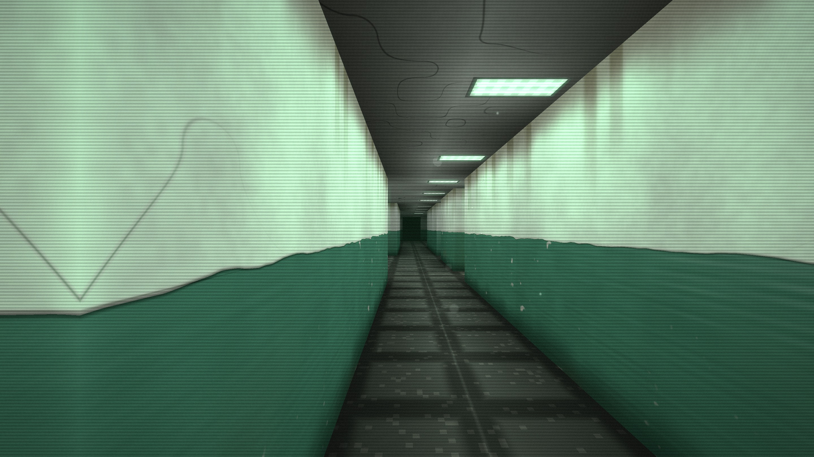
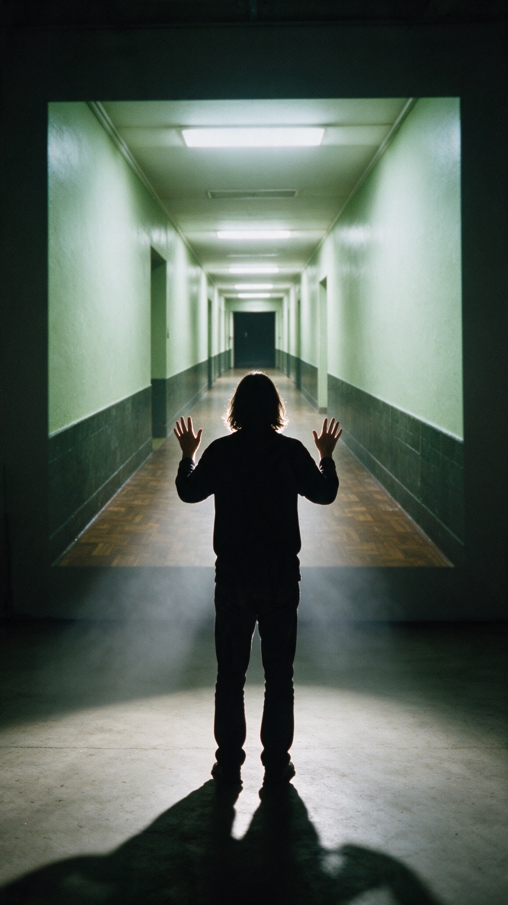
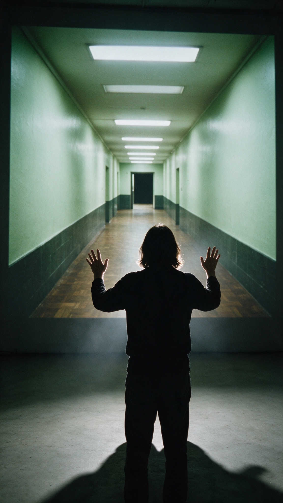

Обновлено 26 сентября 2026
Лабиринт полутёмных комнат в браузере, где висят восемнадцать работ UVALISS из серии SOULS: найди все, и арка из роз тебя выпустит.
CONSPACE ROOMS: прогулка по лабиринту, который браузер строит заново для каждого гостя. Больничные коридоры страха, бабушкина квартира с коврами на стенах, бледные комнаты, растворяющиеся в кружеве и свете. Восемнадцать работ UVALISS висят там, куда их положили коридоры, поэтому каждый встречает их в своём порядке. Музыка генерируется во время ходьбы и не повторяется. Работа открывается на компьютере и телефоне, а в галерее ей управляют жестами рук.
UVALISS посвятила серию SOULS тому, как заглянуть в свой внутренний мир и принять его таким, какой он есть. CONSPACE ROOMS проходит тот же путь пространством. Сначала больничные коридоры: зелёная масляная краска под побелкой, гудящие лампы, брошенные койки и капельницы. Потом бабушкина квартира: обои с розетками, ковры на стенах, включённый телевизор в пустой комнате, пластинки за стеной. Дальше светлые комнаты, где стены распадаются на кружево.
Карты и указателей нет. Путь подсказывают свечи, редкая дверь поддаётся, если постоять перед ней, каждая работа звучит своей нотой. Роза в углу экрана растёт с каждой встреченной работой; когда встречены все восемнадцать, открывается арка из роз и карточка с вопросами, которые души задавали по дороге.
Лабиринт строится из времени входа, до секунды, поэтому два посещения почти никогда не совпадают. Работа ничего не собирает о зрителе. В галерее она становится инсталляцией: проекция, веб-камера и один гость, который ведёт прогулку жестами обеих рук.
Можно публиковать в материалах о работе с указанием авторов. Нажмите на кадр, чтобы скачать его в полном размере.



Надпись CONSPACE ROOMS, PNG 3072×384. Шрифт: Departure Mono (SIL OFL). Фон #010805.
«CONSPACE ROOMS, 2026. Интерактивная проекция. Идея, дизайн опыта и код: Sinaida Krivchenko. Работы серии SOULS © UVALISS (Алиса Феер)».
Sinaida: sinaida.eu/#contact · @sin.ai.da
UVALISS: uvaliss.ru/contacts · @uvaliss
Для галерей: райдер с техническими условиями.
← назад в CONSPACE ROOMSUpdated 26 September 2026
A labyrinth of half-lit rooms in the browser where eighteen works from the SOULS series by UVALISS hang: find them all and an arch of roses lets you out.
CONSPACE ROOMS is a walk through a labyrinth the browser builds anew for every visitor. Hospital corridors of fear, a grandmother’s flat with rugs on the walls, pale rooms dissolving into lace and light. Eighteen works by UVALISS hang wherever the corridors put them, so everyone meets them in their own order. The music is generated as you walk and never repeats. The piece runs on a computer or a phone; in a gallery, visitors steer it with their hands.
SOULS is a series by UVALISS about looking into your own inner world and accepting it as it is. CONSPACE ROOMS walks the same road through space. First the hospital corridors: green oil paint under whitewash, humming tubes, abandoned beds and drip stands. Then a grandmother’s flat: rosette wallpaper, rugs on the walls, a television left on in an empty room, records playing through the wall. Then pale rooms where the walls come apart into lace.
There is no map and no signage. Candles show the way, a rare door gives way if you stand in front of it, and every work hums its own note. A rose in the corner of the screen grows with each work you meet; once all eighteen are found, an arch of roses opens onto a card of the questions the souls asked along the way.
The labyrinth is built from the moment you enter, to the second, so two visits almost never match. The piece keeps nothing about its visitors. In a gallery it becomes an installation: a projection, a webcam, and one visitor who steers the walk with both hands.
Free to publish in coverage of the piece, with credit. Click a still to download it at full size.
CONSPACE ROOMS wordmark, PNG 3072×384. Typeface: Departure Mono (SIL OFL). Background #010805.
“CONSPACE ROOMS, 2026. Interactive projection. Concept, experience design and code: Sinaida Krivchenko. SOULS series works © UVALISS (Alisa Feer).”
Sinaida: sinaida.eu/#contact · @sin.ai.da
UVALISS: uvaliss.ru/contacts · @uvaliss
For galleries: the rider with technical terms.
← back to CONSPACE ROOMS